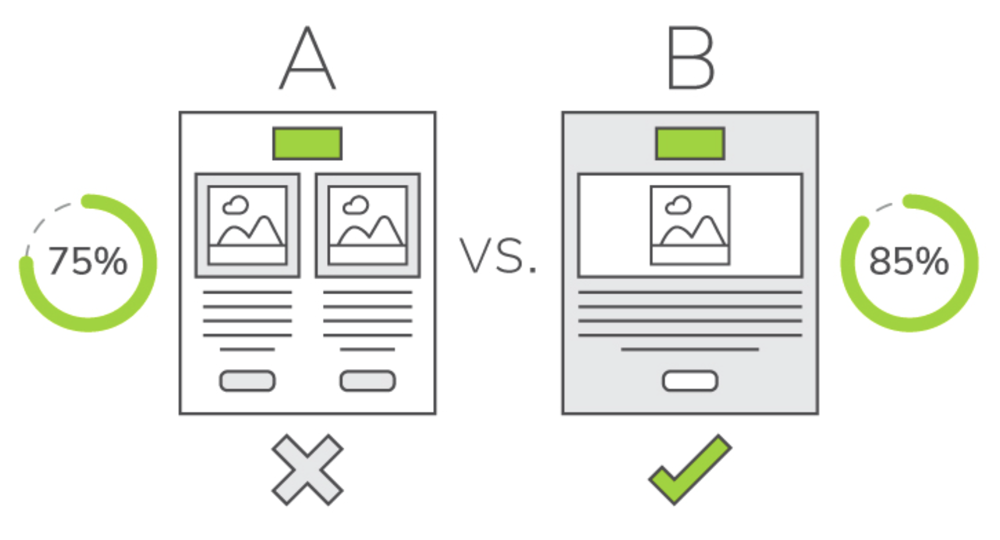
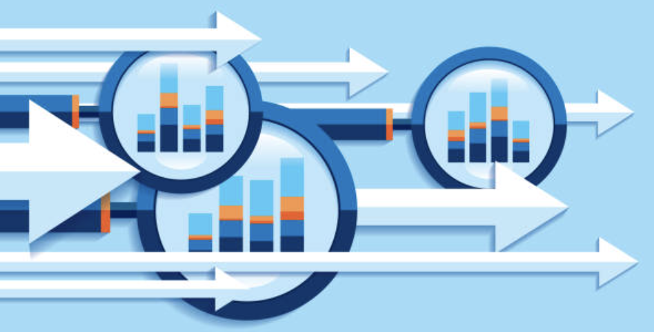
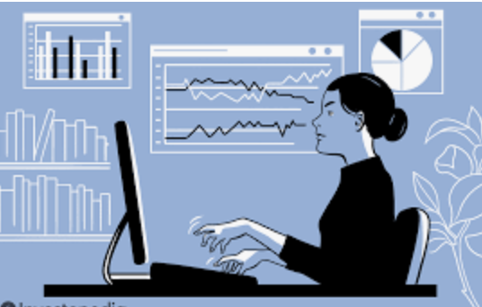

Facilitated international growth initiatives at Bytedance by conducting rigorous market research and overseeing A/B testing protocols. I specialized in optimizing the efficiency of payment funnels and translating localized user data into scalable strategic recommendations for high-growth global markets.

Orchestrated comprehensive market-entry strategies by performing TAM estimations and benchmarking against fourteen leading nutraceutical brands. I focused on identifying whitespace opportunities and designing cost-efficient product prototypes tailored to the specific regulatory and consumer requirements of the U.S. market.

Authored in-depth thematic reports analyzing macro-economic sector trends. I synthesized various earnings signals and policy developments to formulate independent investment perspectives, utilizing data visualization to transform complex datasets into actionable insights for institutional stakeholders.
